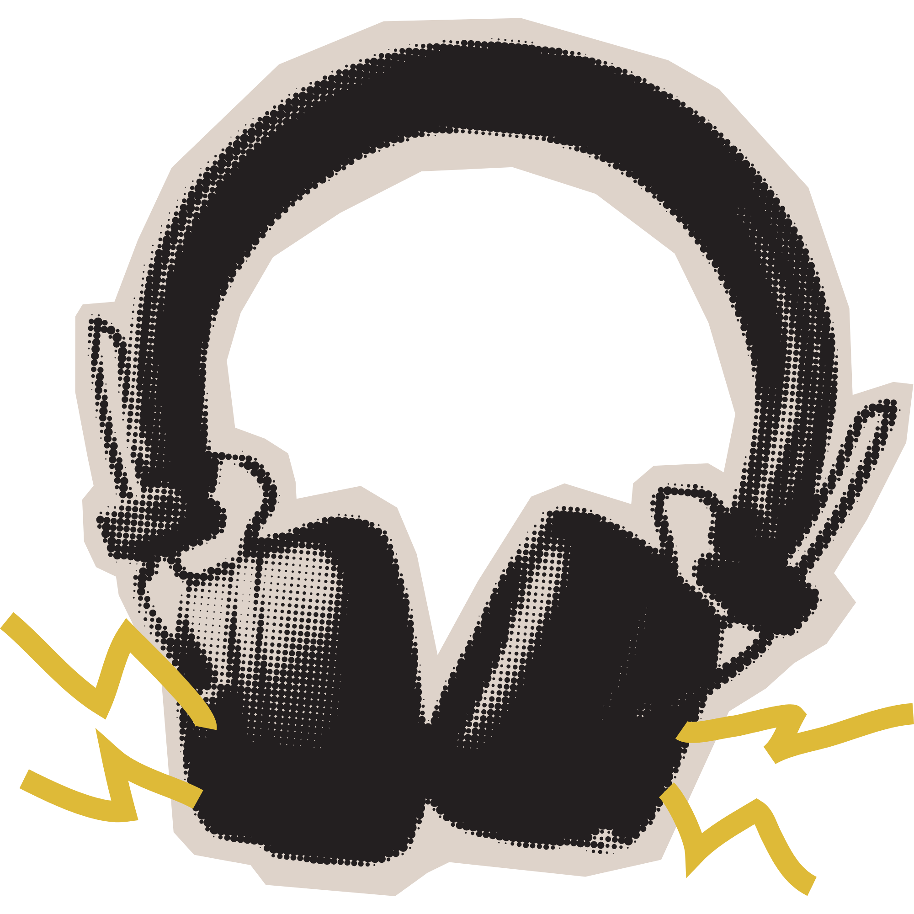
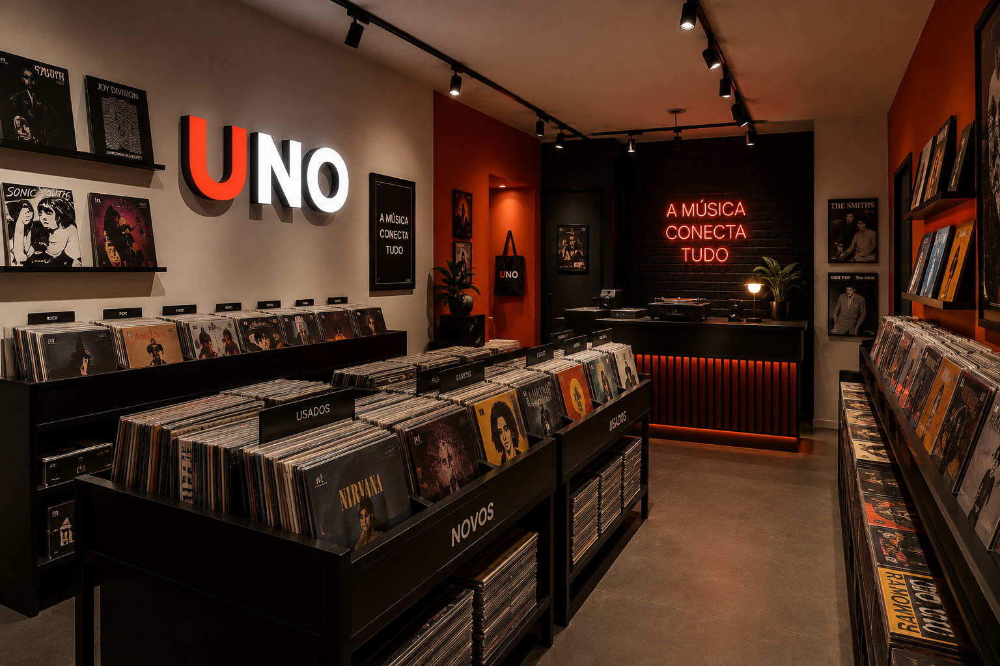
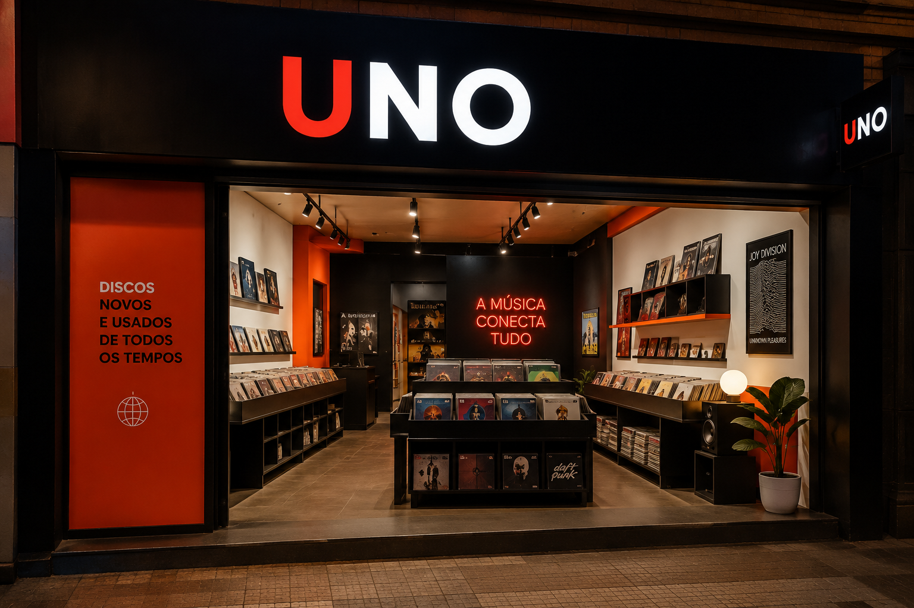

Nossa História
Quase três décadas apaixonados por música e memórias.
Quem somos
A UNO nasceu em 1995 de uma simples paixão: a música que sai do sulco de um disco e invade a sala, a alma e a memória. O que começou como uma pequena banca em São Paulo cresceu para se tornar uma das mais completas lojas de CDs e discos de vinil do país.
Aqui você não compra apenas um disco — você leva uma experiência. Nossos atendentes são músicos e colecionadores que conhecem cada título do estoque e adoram indicar aquele álbum que vai mudar sua vida.
Seja bem-vindo ao lugar onde a música nunca para.


Nossa linha do tempo
O início
Abrimos as portas de uma pequena banca no centro de São Paulo com apenas 200 discos e um sonho.
Primeira loja física
Mudamos para um espaço próprio no bairro Vila Madalena e chegamos a mais de 3.000 títulos em estoque.
O renascimento do vinil
Acompanhamos o boom do vinil e ampliamos nosso acervo com prensagens especiais e importados raros.
Loja online
Lançamos nossa plataforma digital para atender colecionadores em todo o Brasil.
Hoje
Mais de 10.000 títulos, eventos culturais mensais e uma comunidade apaixonada por música.
Quem somos
Giovanna Parejas
Fundador & MusicistaGuitarrista e fã de rock progressivo. Conhece cada disco de olhos fechados.
Bruce li
E-commerce & Redes SociaisTrouxe a loja para o mundo digital sem perder a alma analógica. Cuida do catálogo online.
Felipe Rorato
Atendimento & ExperiênciaA pessoa que faz qualquer cliente se sentir em casa. Especialista em recomendar o disco certo.
Matheus Pereira
Eletrônico & ExperimentalProdutor musical nas horas vagas e colecionador de sintetizadores antigos. Conhece cada subgênero do eletrônico.
Laura Mirili
Clássico & ÓperaFilha de maestro, cresceu ouvindo Beethoven e Mahler no toca-discos da sala. É a voz mais refinada da equipe.